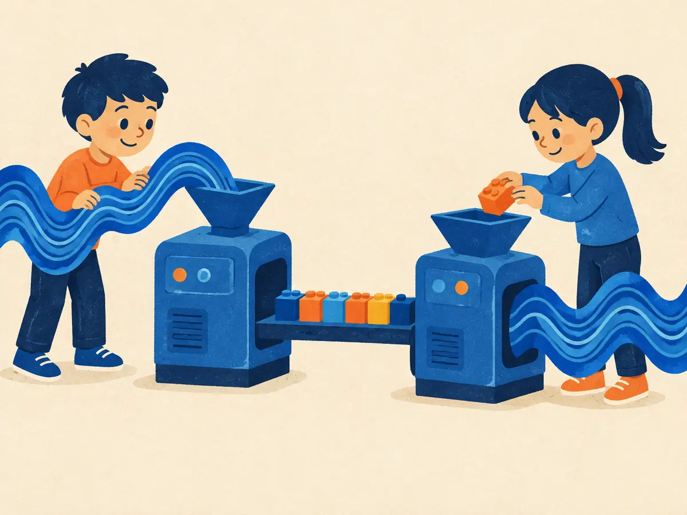

Neural audio codecs & audio tokens
Language models generate by picking the next token from a vocabulary. To make them speak or play music, audio must become tokens too. Neural audio codecs do that: they squeeze a second of sound into a few hundred integers and can rebuild it from them. This lesson shows how.
By the end you can
- Explain vector quantization and why codecs stack several codebooks (residual VQ).
- Compute a codec's bitrate and tokens per second from its frame rate, number of codebooks and codebook size.
- Tell semantic tokens from acoustic tokens, and say why newer codecs use low frame rates.
Guess first; it primes you for the answer.
Why turn audio into discrete tokens rather than keep continuous features?
- So the same next-token machinery as text LLMs (a softmax over a vocabulary, cross-entropy, sampling) can generate audio
- Because continuous features can't be stored on disk
- Because discrete tokens are always higher quality
- Because GPUs can't multiply floating-point numbers
A codec produces 75 frames per second; each frame is 8 tokens, each from a codebook of 1,024 entries. What's its bitrate?
- 600 bit/s
- 614 kbit/s
- 6 kbit/s
- 80 kbit/s
Why discrete audio tokens?
Classic codecs like MP3 (1990s) and Opus (2012) were hand-designed to fool human ears: throw away what we can't hear, encode the rest compactly. Their bitstreams are great for streaming music but useless as a vocabulary for a model. Meanwhile, generating raw samples one at a time, as WaveNet did in 2016, means 16,000 to 24,000 sequential predictions per second of audio.
The fix came from learned discrete representations. The VQ-VAE (van den Oord et al., 2017) showed an autoencoder could squeeze data through a bottleneck of codebook indices. A neural audio codec applies that idea to sound with three parts:
- Encoder: a stack of strided 1-D convolutions turns the waveform into a much shorter sequence of vectors, one per frame. At 24 kHz with a total stride of 320 samples, that's $24{,}000 / 320 = 75$ frames per second, one every 13.3 ms.
- Quantizer: replaces each frame vector with entries from learned codebooks, and outputs their integer indices: the audio tokens.
- Decoder: mirrors the encoder with upsampling convolutions to rebuild the waveform from the tokens.
Like the autoencoders of P6.4, it's trained to reconstruct its input, but a plain sample-by-sample error gives muffled audio. So codecs add losses on spectrograms at several resolutions and adversarial losses: discriminator networks that try to tell real audio from decoded audio, pushing the decoder to produce crisp, natural-sounding detail.
Once audio is a sequence of integers, everything from the text world applies: a Transformer can predict the next audio token with a softmax, be trained with cross-entropy, sampled with temperature and top-p, and sped up with a KV cache.
Explain like I'm 5

Imagine a machine that eats a very long, wiggly ribbon of sound and spits out a short row of colored bricks. There are only so many brick colors, so each brick is easy to write down: "brick number 7, brick number 302…".
A second machine reads the bricks and knits the ribbon back, almost exactly as it was. Because bricks are easy to count and line up, a storytelling robot that's good at "what comes next?" can learn to lay down new bricks, and the second machine turns them into brand-new sound.
Where it breaks: the ribbon that comes back isn't identical. The machines learned to keep what ears notice and drop tiny details, and with fewer bricks per second more is lost.
A codec's encoder has a total stride of 640 samples on 32 kHz audio. How many frames per second does it produce?
- 640
- 50
- 32
- 20
Vector quantization and residual VQ
Vector quantization (VQ) keeps a codebook of $K$ learned vectors $c_1, \dots, c_K$. Each frame vector $x$ is replaced by its nearest entry, and only that entry's index is sent:
$$q(x) = c_{k^*}, \qquad k^* = \arg\min_k \lVert x - c_k \rVert$$An index into $K$ entries costs $\log_2 K$ bits: 1,024 entries is 10 bits. The decoder looks the index up in the same codebook.
The trouble is scale. Suppose you want 6 kbit/s at 75 frames per second: that's 80 bits per frame. One codebook with $2^{80}$ entries (about $10^{24}$) is impossible to store or search. The SoundStream authors pointed this out and used the fix below.
Residual vector quantization (RVQ) uses several small codebooks in sequence. Quantize $x$ with codebook 1, subtract to get what's left over (the residual), quantize the residual with codebook 2, and so on:
$$r_0 = x, \qquad c^{(i)} = q_i(r_{i-1}), \qquad r_i = r_{i-1} - c^{(i)}, \qquad \hat{x} = \sum_{i=1}^{Q} c^{(i)}$$$Q$ is the number of codebooks (quantizer stages); $q_i$ is nearest-neighbour lookup in codebook $i$; $\hat{x}$ is the reconstruction. Eight codebooks of 1,024 entries give the same 80 bits per frame with only $8 \times 1{,}024$ stored vectors. Each stage refines the previous ones, so the first codebook carries the coarse picture and later ones add detail.
Worked example (1-D)
Codebook 1 is $\{-1, -0.5, 0, 0.5, 1\}$; codebook 2 is the same divided by 4; codebook 3 divided by 16. Encode $x = 0.83$.
- Stage 1: nearest to 0.83 is $1$. Residual $0.83 - 1 = -0.17$.
- Stage 2 (entries $\pm0.25, \pm0.125, 0$): nearest to $-0.17$ is $-0.125$. Residual $-0.045$.
- Stage 3 (entries $\pm0.0625, \pm0.03125, 0$): nearest is $-0.03125$. Residual $-0.01375$.
- Reconstruction $1 - 0.125 - 0.03125 = 0.84375$; the error shrank from 0.17 to 0.045 to 0.014 as stages were added.
Same codebooks, now $x = -0.37$.
- Stage 1 picks:
- Residual after stage 1:
- Stage 2 picks:
- Reconstruction after two stages:
One more trick from SoundStream: quantizer dropout. During training, randomly use only the first $n$ codebooks. The model learns to reconstruct well from any prefix, so a single trained codec can run at several bitrates by keeping more or fewer codebooks.
In residual VQ, what does codebook 2 quantize?
- The original frame vector, independently of codebook 1
- The next frame in time
- A random subset of the frame's dimensions
- The residual: the part of the vector that codebook 1's choice didn't capture
SoundStream and EnCodec: the bitrate arithmetic
SoundStream (Zeghidour et al., 2021, Google) put the pieces together: a convolutional encoder and decoder, RVQ with quantizer dropout, and adversarial training, for 24 kHz audio at 3 to 18 kbit/s. In the authors' listening tests, SoundStream at 3 kbit/s beat the classic Opus codec at 12 kbit/s. EnCodec (Défossez et al., 2022, Meta) refined the recipe and released the models; its 24 kHz version became the default speech tokenizer in a wave of research, including VALL-E (A1.4); MusicGen (A1.5) trained a 32 kHz variant.
For RVQ codecs the bitrate is simple arithmetic:
$$\text{bitrate} = f_{\text{frame}} \times Q \times \log_2 K, \qquad \text{tokens per second} = f_{\text{frame}} \times Q$$$f_{\text{frame}}$ is frames per second, $Q$ the number of codebooks used, $K$ the codebook size.
Worked example: EnCodec 24 kHz
- 75 frames per second; codebooks of 1,024 entries, so 10 bits per token.
- At its 6 kbps setting it uses $Q = 8$ codebooks: $75 \times 8 \times 10 = 6{,}000$ bit/s.
- The settings 1.5, 3, 6, 12 and 24 kbps correspond to 2, 4, 8, 16 and 32 codebooks.
- Compared with 16-bit PCM at 24 kHz (384 kbit/s, A1.1), 6 kbps is 64 times smaller, and it's 600 tokens per second instead of 24,000 samples.
Kyutai's Mimi codec runs at 12.5 frames per second and, as used in Moshi (A1.6), 8 codebooks of 2,048 entries.
- Bits per token:
- Bitrate in bit/s:
- Tokens per second:
- Tokens for one minute of speech:
Playground: frame rate × codebooks × bits
Pick a codec or set the three knobs. Bars use a log scale: each grid step is 10×. Compare the codec's bitrate with raw PCM, and its tokens per second with raw samples and with text.
An RVQ codec runs at 50 frames/s with 1,024-entry codebooks. How many codebooks does it need for 4 kbit/s?
- 8
- 4
- 40
- 10
Semantic vs acoustic tokens, and low frame rates
Codec tokens are trained to rebuild sound, so they spend most of their bits on acoustic detail: the speaker's timbre, the room, the microphone. That's great for quality but hard for a language model: 600 tokens per second of mostly fine detail, where the words and meaning are spread thinly.
AudioLM (Borsos et al., 2022, Google) split the job in two:
- Semantic tokens: run a self-supervised speech model (w2v-BERT) and cluster its features with k-means. These tokens capture phonetic content and long-range structure, at a low rate, but can't rebuild the exact voice.
- Acoustic tokens: SoundStream codes, which can.
AudioLM generates in stages: first semantic tokens (what is said, with what structure), then coarse acoustic tokens conditioned on them, then fine acoustic tokens. Given a few seconds of someone speaking, it continued in the same voice with plausible, if often meaningless, speech, and did the same for piano.
Later codecs fold both kinds into one stream. Mimi (Kyutai, 2024, introduced with the Moshi model) runs at only 12.5 frames per second (80 ms per frame) on 24 kHz audio, at about 1.1 kbit/s, and is fully streaming. Its first codebook is trained to also match features from a self-supervised speech model (WavLM), so it behaves like a semantic token; the remaining codebooks carry acoustic detail. A lower frame rate means fewer autoregressive steps: 12.5 frames per second is getting close to the few tokens per second of text.
As of 2026 the design space is wide: codecs differ in frame rate (roughly 12.5–75 Hz), number of codebooks, whether tokens are split into semantic and acoustic parts, and whether a model uses discrete tokens at all or a continuous latent generated by diffusion or flow matching (A1.4, A1.5). The arithmetic above is how you compare them.
In AudioLM, what are semantic tokens good for that acoustic codec tokens aren't?
- Rebuilding the exact voice and recording conditions
- Compressing music to the lowest possible bitrate
- Capturing phonetic content and long-range structure compactly, so generation stays coherent
- Replacing the decoder
Explain how a neural audio codec turns audio into tokens, why it uses residual VQ, and how you'd compute its bitrate.
EnCodec 24 kHz at 1.5 kbps uses 2 codebooks. How many tokens per second is that?
- 75
- 150
- 1,500
- 20
Why does SoundStream train with quantizer dropout?
- To prevent overfitting of the discriminator
- To make the encoder faster
- To remove the need for a decoder
- So one model works at several bitrates, using only the first $n$ codebooks
An autoencoder (P6.4) learns a compact bottleneck. What does a neural codec add to that bottleneck?
- Quantization: the bottleneck becomes integer indices into learned codebooks
- Nothing; it's an ordinary autoencoder with a continuous bottleneck
- A text tokenizer
- A larger bottleneck than the input
Why is a 12.5 Hz codec like Mimi attractive for a speech language model?
- It needs no decoder
- It works only for music
- Fewer frames per second means fewer autoregressive steps and shorter contexts per minute of speech
- It stores audio without any loss
Key takeaways
- A neural codec is an autoencoder with a discrete bottleneck: conv encoder → codebook indices → conv decoder, trained with reconstruction and adversarial losses.
- RVQ quantizes the residual stage by stage: $\hat{x} = \sum_i c^{(i)}$; quantizer dropout gives variable bitrate.
- Bitrate $= f_{\text{frame}} \times Q \times \log_2 K$: EnCodec 6 kbps $= 75 \times 8 \times 10$; Mimi $\approx 12.5 \times 8 \times 11 = 1.1$ kbps.
- Semantic tokens capture content and structure; acoustic tokens capture voice and detail. Newer codecs merge both at low frame rates.
Add this lesson's cards to your spaced-review deck.